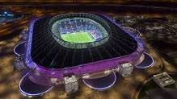
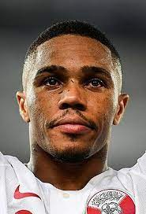

Qatar na Copa do Mundo
A Copa do Mundo FIFA de 2022 ou Campeonato Mundial de Futebol FIFA de 2022 será a vigésima segunda edição deste evento esportivo, um torneio internacional de futebol masculino organizado pela Federação Internacional de Futebol (FIFA), que ocorrerá no Catar. A edição de 2022 será a primeira realizada no Oriente Médio e a última a ter o formato de 32 equipes, já que a competição terá uma mudança no formato e número de equipes na edição de 2026, onde será sediado no Canadá, Estados Unidos e México, passando para 48 equipes. Com sete cidades-sede, o campeonato será disputado entre 20 de novembro e 18 de dezembro, ao invés do período tradicional graça às altas temperaturas que o país sofre no meio do ano; esta é a primeira vez em que uma copa do mundo será disputada no final do ano. Acusações de corrupção foram feitas após o Catar ganhar o direito de sediar o campeonato. A FIFA realizou uma investigação interna sobre estas alegações e absolveu o Catar de qualquer crime cometido. Em 27 de maio de 2015, promotores federais suíços abriram uma investigação sobre corrupção e lavagem de dinheiro nas eleições das cidades-sede das edições de 2018 e 2022. Em 7 de junho de 2015, foi anunciado que o Catar poderia perder o direito de sediar o campeonato, após denúncias de suborno. De acordo com Domenico Scala, representante da auditoria da FIFA, as denúncias surgiram após a divulgação do resultado da votação de eleição da cidade-sede. Porém, nenhum indício foi comprovado e o Catar foi confirmado como sede desta edição. O Catar sofreu diversas criticas sobre as condições dos trabalhadores dos novos estádios para a competição, sendo que a Anistia Internacional referiu-se como trabalho escravo as condições dos trabalhadores, que sofriam abusos de direitos humanos, violando diversas regras da instituição. A FIFA apresentou o mascote oficial da Copa do Mundo de 2022. Trata-se de La'eeb, um simpático lenço de cabeça masculino tradicional da cultura árabe. Segundo a FIFA, a palavra La’eeb significa jogador habilidoso em árabe.
Estadio Al Bayt

Estadio Al Janoub

Estadio Ahmad Bin Ali

5 Principais Jogadores
-

Saad Al Sheeb
Goleiro
-

Ró-Ró
Zagueiro
-

Bassam Al-Rawi
Meia
-

Almoez Ali
Atacante
-

Akram Afif
Atacante